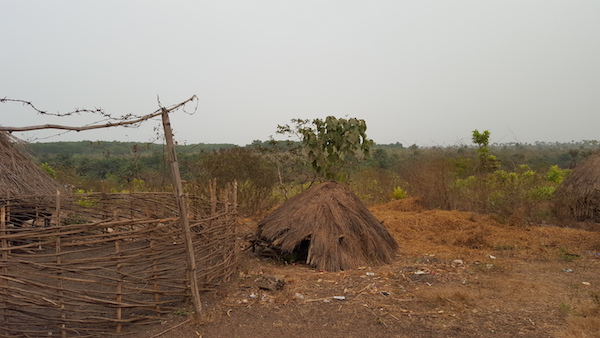

Le secteur de l'elevage est en dangé
Dans le passé l'elevage etait le moteur de l'economie du village. Mais il y a une dizaine d'années une epidemie ravagea tout le betail qui etait dans le village. Depuis cela tous les fermiers se sont reconvertit en cutivateur d'anasas.
Sur les images ci-dessous, on peut apercevoir le reste des ruines des fermes qui se trouvent a quelque kilometres du village

Image ruine ferme 1
Image ruine ferme 1

Image ruine ferme 1